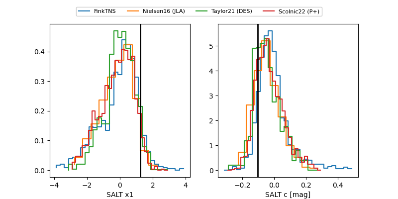

FINK: ZTF25abmhchv
Lasair: ZTF25abmhchv
ALeRCE: ZTF25abmhchv
TNS: 2025wce
YSE: 2025wce
ZTF25abmhchv (ztf,fink)
2025wce (tns,yse)
ATLAS25kuv (atlas)
equatorial (ra, dec) = (238.0977,+51.57903)
galactic (l, b) = (81.3752,+48.30510)

last atlasc=17.30, atlaso=17.22, ztfg=17.82, ztfr=17.99
1 atlasc, 8 atlaso, 2 ztfg, 2 ztfr detections